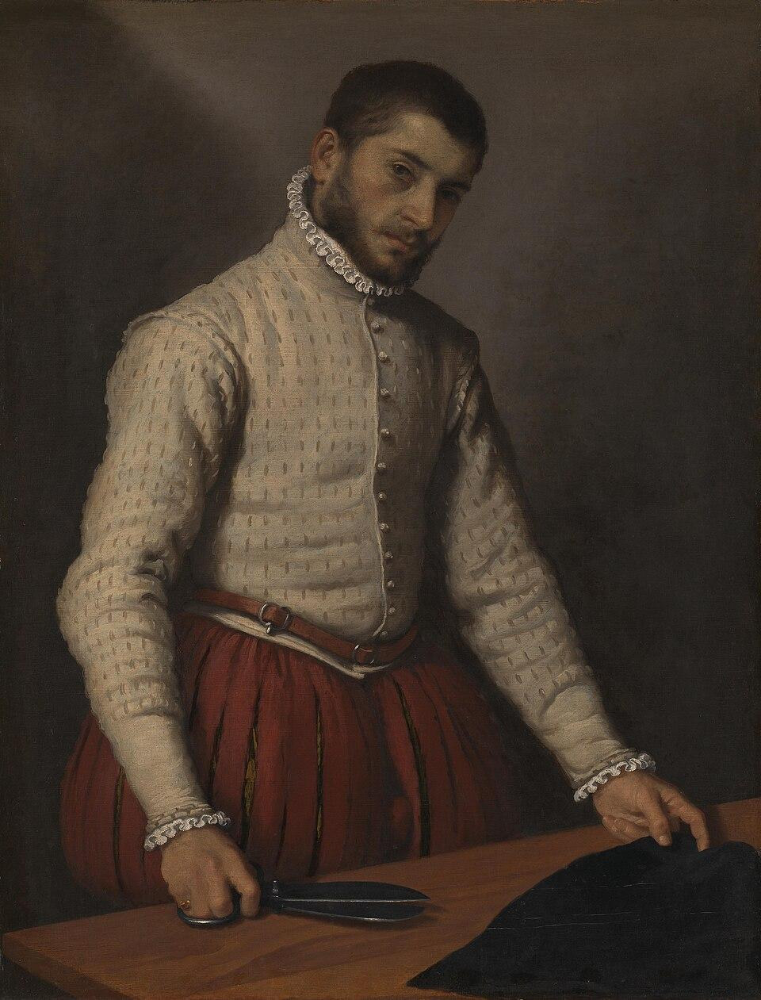

CHAPTER 1 · 통제 방식의 진화
수공구의 시대

톱질의 속도는 누가 정했는가?
그의 팔이 정했다.
언제 쉴지는?
그의 허리가 정했다.
도구는 신체의 연장이었고, 노동의 리듬은 신체 안에 있었다.
이 시대에도 직업병은 있었다 — 라마찌니가 이미 1700년에 기록했다. 그러나 적어도 노동의 주도권은 노동자의 몸 안에 있었다.
속도와 강도를 결정한 것은 노동자 자신의 신체 감각이었다
조반니 바티스타 모로니, 〈재단사〉 (1565) · National Gallery, London